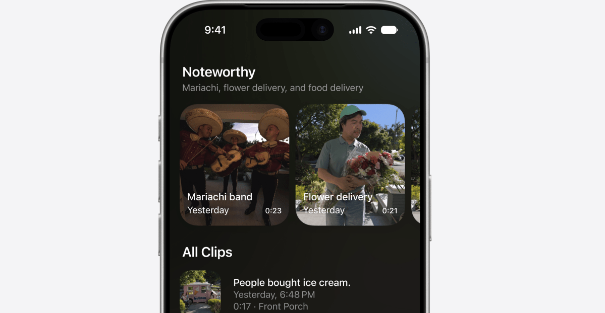
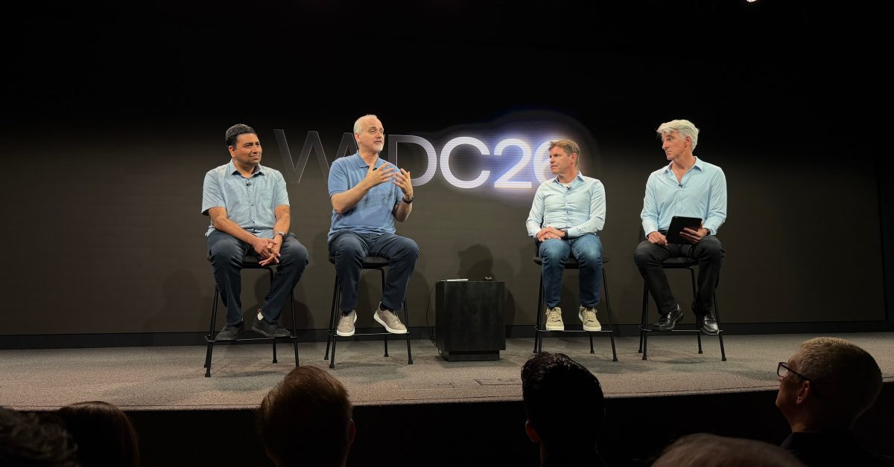
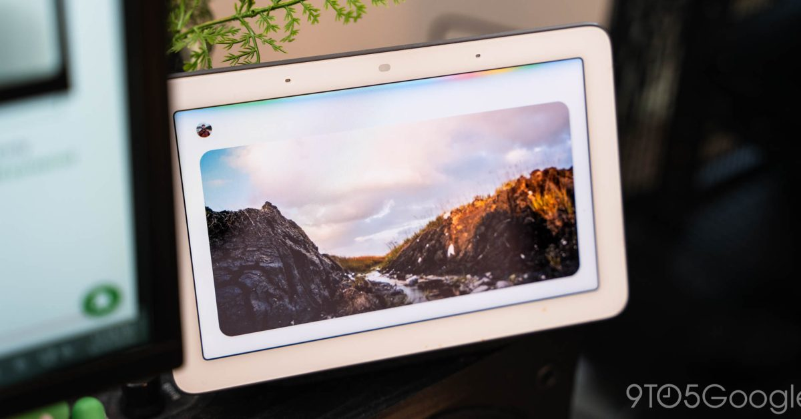
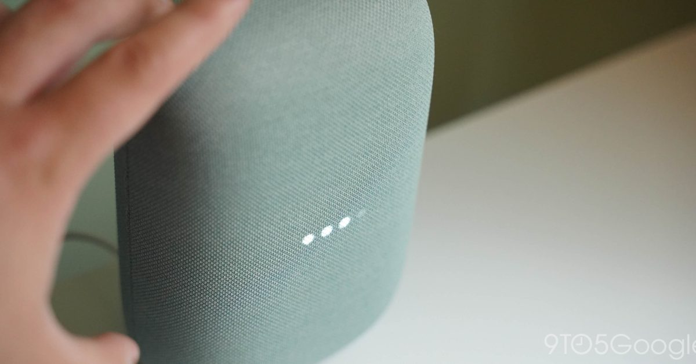
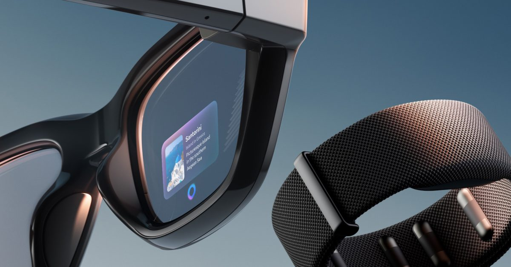

애플 홈 카메라에 AI 탑재 — 영상 내용을 말로 검색
iOS 27부터 애플 홈(HomeKit)에 연결된 카메라가 영상 내용을 자동 분석해 텍스트로 설명해준다. '거실에서 아이가 넘어진 장면'처럼 자연어로 검색해 원하는 구간을 바로 찾을 수 있게 됐다. 집 안 보안 카메라가 단순 녹화에서 AI 기반 상황 인식 도구로 진화하는 시작점이다.
업계 관찰자 시점 · 이미지를 누르면 원문으로 이동합니다

iOS 27부터 애플 홈(HomeKit)에 연결된 카메라가 영상 내용을 자동 분석해 텍스트로 설명해준다. '거실에서 아이가 넘어진 장면'처럼 자연어로 검색해 원하는 구간을 바로 찾을 수 있게 됐다. 집 안 보안 카메라가 단순 녹화에서 AI 기반 상황 인식 도구로 진화하는 시작점이다.

WWDC 2026에서 공개된 Siri AI는 애플 자체 모델과 구글 Gemini를 함께 사용한다. 온디바이스 처리(프라이버시 우선)와 클라우드 Gemini(복잡한 요청)를 용도에 따라 나눠 쓰는 구조로 설계됐다. 스마트홈 생태계의 두 축이 음성비서 영역에서 손을 잡은 점이 주목된다.

구글이 Nest Hub 등 홈 기기의 Gemini 기능을 업데이트해 날씨·음악 재생 명령에 더 풍부한 시각 정보를 제공하기 시작했다. 말로 명령하면 단순 텍스트 대신 관련 이미지와 상세 정보가 화면에 표시된다. 가정용 AI 허브가 텍스트 응답에서 멀티미디어 경험으로 전환되는 흐름이다.

구글 스토어에서 Nest Mini와 Nest Audio가 재고 소진 상태로 전환됐다. 이달 내 새 Google Home Speaker 발매가 예상되며, 스마트 스피커 라인업이 Gemini AI 중심으로 재편될 신호로 해석된다. 기존 기기 지원 정책도 주목해야 할 시점이다.

메타 Ray-Ban 스마트 안경의 앱이 착용자가 촬영한 영상에서 얼굴을 자동 식별하는 기능을 준비 중이라는 보도가 나왔다. 길거리에서 타인의 신원을 자동으로 알아내는 시나리오가 가능해질 수 있어 프라이버시 침해 논란이 커지고 있다. AI 웨어러블이 편의성과 감시 사이의 경계를 어떻게 설정할지 규제 논의가 시작됐다.
OpenAI가 ChatGPT를 대화형 채팅 도구에서 자율적으로 작업을 수행하는 AI 에이전트 플랫폼으로 재설계하고 있다는 보고서가 나왔다. 코딩·업무 자동화를 전면에 내세운 새 UI가 준비 중이며, 스마트홈 자동화 루틴을 AI가 스스로 설계하는 방향과 맥락이 닿아 있다. AI가 '도구'에서 '행위자'로 전환되는 흐름이 플랫폼 전반으로 확산되고 있다.